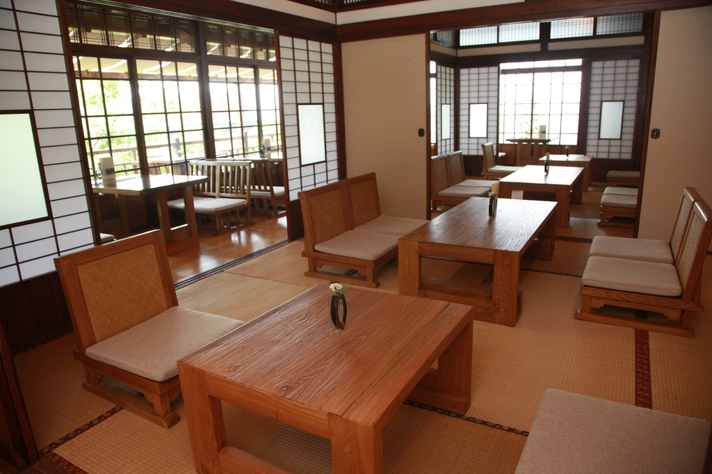

北投文物館的前身為「佳山旅館」，始建於1921年，當時是北投最高級的溫泉旅館。日治時期為「日本軍官俱樂部」，
據傳二次世界大戰期間曾為神風特攻隊的度假所。國民政府到台後由外交部接管，先後為安置軍民的「佳山宿舍」和供
政府官員度假之用的「佳山招待所」。
後拍賣民間，成為私人度假別墅，也成為拍攝古裝片的場所，因拍「古月莊」而被稱謂的別號不逕而走。爾後張純明先
生在此歷經風華歲月的日式建築園區，創辦「台灣民藝文物之家」，致力保存台灣早期民俗文物與原住民藝術，近年正
式更名為「北投文物館」。1998年9月，台北市政府將此園區列入市定古蹟，自2002年起，建築體因面臨整修，故「北
投文物館」全面修館，費時5年多才完成。
日治時期，台灣各地留下不少仿巴洛克或者日本傳統式建築，相當美麗典雅，唯走過歲月，
歷經風霜，許多都已因破舊不堪而拆除或重建，十分可惜。所幸也有的由於《文化資產保存
法》而被列為古蹟，得以搶救保存下來，經重修整建，恢復舊觀，進而再利用，創造了生機
，其中，「北投文物館」即深具代表性。
台北市定古蹟「北投文物館」，前身為日治時期北投最高級的溫泉旅館──「佳山」，此館興
建於一九二○年，當時也是「日本軍官俱樂部」，跟花蓮「松園別館」一樣，據傳都曾做為二
次世界大戰末期神風特攻隊度假所。
國民政府遷台後，「佳山旅館」由外交部接管，做為安置軍民的「佳山宿舍」和供政府官員度
假之用的「佳山招待所」。到了一九六○年代，拍賣成為私人度假別墅，且因拍攝古裝片，「古
月莊」之別稱不脛而走。一九八三年，張純明 先生規劃此一日式建築園區，創辦「台灣民藝
文物之家」，致力於保存台灣早期民俗文物與原住民藝術，近年正式更名為「北投文物館」。
一九八八年九月，台北市政府將此園區列入市定古蹟。二○○二年起，「北投文物館」全面進行
古蹟修復，費時五年餘才完成。歲月悠悠，如今此館已年近九十矣。
重新開館的文物館，古風猶存，邁入二十一世紀的生命歷程，定期展示日本、漢人及原住民文物
，呈現跨文化的多元民俗內涵，以及古蹟建築走過近一世紀的歷史風華。此館現由「財團法人福
祿文教基金會」委外經營，誠為古蹟建築修復及再利用、在地文化保存、文化資產推廣等之極佳
示範。
